| Content |
| Running The Game |
To run the Dark Tower game you need the Java Runtime Environment J2SE 1.4.0 (JRE) or the Java Software Development Kit J2SE 1.4.0 (SDK). You can download it from http://java.sun.com/downloads.html. After installing the Java Runtime Environment you can start the game by double clicking on the darktower.jar file. If this does not work you can start the game by typing
javaw.exe -jar darktower.jarat the DOS-Prompt or by using the darktower.cmd batch file.
| The Challenge And Object Of The Game |
Retrieve the Ancient Magic Scepter that has been stolen by a tyrant king. The Scepter is the Power Staff of the Empire and a Kingdom has been offered for its return. It now lays hidden in the Dark Tower guarded by the tyrant's fierce band of Brigands. Three magic keys will open the tower to you. Find the keys in three foreign kingdoms on the gameboard and you can lay siege to the Dark Tower.
In search of the keys, leave the Citadel in your home kingdom with 10 warriors, 30 bags of gold and 25 rations of food. On your journey, you will fight battles, be attacked by dragons, lose warriors to plague and starvation and get hopelessly lost in uncharted territories.
But don't despair! Visit the Bazaars to buy warriors and other supplies. Stop at the Mines and Ruins to discover treasures of gold, Dragonswords, magic keys, helpful wizards and the Flying Horse, Pegasus. The Sanctuaries are open to you, too, ready to outfit you with warriors, gold and food.
Once you discover the three keys, begin your siege of the Dark Tower. Start out by solving the Ancient Riddle of the Keys, then fight the Brigands within!
If you have a stoutheart, quick wits and undying courage, you will retrieve the Scepter, save the Empire and win a Kingdom.
DARE TO LAY SIEGE TO THE DARK TOWER!
The object of the game is to journey around the board, collect three magic keys and successfully attack the Dark Tower.
| The File Menu |
To start a new Dark Tower game select this entry. If you choose Place buildings randomly in the Option window the buildings will placed randomly all the time you start a new game.
You have the choice to play without the board, by simple closing the Board window. To play with the board again, open the Board window by selecting this entry.
In the Option window you can select the number of players and determine which of them should controlled by the computer.
There are 4 levels of play. 3 of the levels differ from each other in the number of Brigands that you must fight in the tower. One of the levels is a special teaching mode that allows you to get acquainted with the different functions of the keyboard panel.
Choose your challenge by choosing a game play level:
Level One...17 to 32 Brigands to fight
Level Two...33 to 64 Brigands to fight
Level Three...17 to 64 Brigands to fight
Level Four...16 Brigands to fight, special teaching mode
The buildings, like the Citadell, the Sanctuary, the Bazaar, the Mine and the Ruin can be placed randomly or at fixed positions. The challange of the battles can be easy, normal or difficult. The computer player actions can be shown or not and the speed of the computer player movement can be set with the slider.
To open the Inventory window select this entry. This window displays the number of warriors, bags of gold and rations of food and the collected object of all 4 players.
| The Game Play |
The flashing number in the Dark Tower window says it is the turn of this player. The flashing symbol 1 indicates it's Player 1's turn; the flashing symbol 2 indicates it's Player 2's turn; the flashing symbol 3 indicates it's Player 3's turn; the flashing symbol 4 indicates it's Player 4's turn. When you see your identifying number flashing, you know it's your turn to play!
When you see your identifying number flashing in the Dark Tower window preceded by a minus sign, the tower is signaling the end of your turn. For example, if -2 is flashing in the window, this indicates that player 2's turn is over. When you receive this end of turn signal, you must always press the No / End button to end your turn!
| What A Turn Consists Of |
The world of Dark Tower is divided into 4 kingdoms of Arisilon, Brynthia, Durnin and Zenon. One of these kingdoms is your home kingdom, the other 3 kingdoms will be referred to as foreign kingdoms. You must travel through 3 foreign kingdoms on your journey around the gameboard and discover a key in each kingdom...a brass key in the first foreign kingdom; a silver key in the second foreign kingdom; and a gold key in the third foreign kingdom. You will not find a key in your home kingdom. Each kingdom is made up of many territories. A territory is one game play space. Some of the territories contain such buildings as Ruins, Mines, Bazaars and Sanctuaries. The frontiers are the 4 long, narrow territories that separate the kingdoms from each other. A frontier is considered one game play space. Dark Tower spaces are the 4 spaces that surround the base of the tower. There is one Dark Tower space per kingdom. A Dark Tower space is considered a territory and one game play space. You can only enter a Dark Tower space at the end of the game when you are ready to lay siege to the tower.
Citadels are the starting spaces for your pawns on the board. There are 4 Citadel territories. You are never allowed to move your pawn inta a foreign Citadel territory.
Move you warrior pawn by clicking into the desired territory. Or you may decide not to move your pawn to another territory but rather remain in your present territory. This is also acceptable. For example, if you're in the Bazaar, you may decide to remain in the same marketplace on your next turn to purchase more supples. Two or more pawns can be on the same territory at the same time.
Notice that the frontier spaces are extra long territories that border several territories in a kingdom. When leaving a frontier space to enter a new territory in a new kingdom, you may move your pawn to any one of the territories that border the frontier space.
You must move your pawn to 3 foreign kingdoms and discover a magic key in each kingdom. Then return back to your home kingdom to lay siege to the Dark Tower. Your movement around the board is counter-clockwise. Howerver, within each kingdom, you may travel in any direction you wish.
Each move of your pawn on the gameboard is accompanied with an action at the Dark Tower.
| Keyboard Buttons |
When you move your pawn to an empty adjacent territory on the gameboard or when you keep your pawn in its present empty territory space by clicking into the desired highlighted territory the Move button on the Dark Tower panel is pressed automatically. An empty territory is any territory that contains no buildings nor is it a frontier territory. One of the 6 random events, below, can happen to you.
If the tower programs a safe move for you, you will hear a short beep sound. No picture will appear in the light-up window. Your end of turn signal will appear in the digital display window.
| 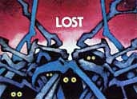 | This is the third event that could happen to you after you move your pawn. When you are lost, the Lost picture will appear in the window accompanied by a rather sad-sounding musical signal. Your pawn moves back to the last territory it was in and your turn is over. However, if you own a Scout, you will see the Scout picture flash on in the window. This means your pawn does not move back and you gain another turn. As you can see, Scouts are very useful to own. They can be purchased at the Bazaar. |
| 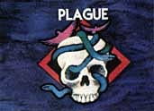 | This is the fourth event that could happen to you after you move your pawn. When the plague strikes, you will see the Plague picture in your light-up window and hear a "Death March" musical sound. Immediately, the tower is programmed to take 2 warriors form you. These 2 warriors you've lost to the plague will be subtracted from your total number of warriors and the final total is displayed in the digital display. However, if you own a Healer, you will see the Healer picture flash on in the window. This means you will not lose the 2 warriors. Instead, you will be rewarded with the addition of 2 healty warriors to your force. Your new total of warriors, will then appear in the digital display window. Healers are very useful. They can be purchased at the Bazaar. |
| 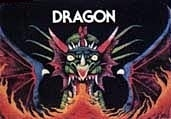 |
This is the fifth event that could happen to you after you move your pawn.
When the dragon attacks you, you will see the Dragon picture in the light-up window
and hear a high-pitched screeching sound. The dragon is a nasty beast and when it
attacks it will take 1/4 of your total gold and warriors immediately. Your new
totals minus the dragon's take will then be displayed in the tower window. The
dragon my attack many times in a game so it usually has accumulated much gold and
many warriors. If you're fortunate enough to own a Dragonsword when the dragon
attacks you, you will be awarded the total amount of gold and warriors hoarded by
the dragon. This added treasure and men is automatically added to your present
inventory and the final total will then be displayed in the tower window. Remember,
your Dragonsword is good for one attack only. Once you use it to slay a dragon, it
is no longer yours.
Important...after the dragon attacks you, place the dragon pawn on any territory except one with a building on it, a frontier territory, a Citadel or a Dark Tower space. When placing the dragon pawn on a territory, be sure to put it in a place that will block one of your opponents, for no player may move his pawn into a territory occupied by the dragon. The dragon pawn is only moved again when the dragon attacks again. |
| 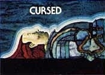 |
This is the sixth event that could happen to you after you move your pawn.
If you are the unfortunate victim of a curse that another player placed on
you with the help of a wizard, the tower will immediately tell you by flashing
the Cursed picture in the light-up window. Accompanying the picture will be
a negative musical signal indicating bad luck for you.
If you are cursed, you will discover that 1/4 of your total amount of gold and warriors has been given to the player who cursed you. Your remaining totals of gold and warriors will flash on the screen. Being cursed negates your turn, regardless of what button you pressed, If you chose not to move your pawn on this turn, it's keep where it was. If you did move your pawn, it's returned to the last territory it occupied. |
When you move your pawn to a territory that has a Mine building or a Ruin building on it, the Ruin button on the Dark Tower panel is pressed automatically. You will hear the eerie sound of a creaking door and one of the following events will happen:
The Mine or Ruin will be deserted. Nothing will happen, no digital display will appear, no light-up picture will flash on. You will only hear the sound of a cracking door shut. Your turn is then over.
Or a battle with brigands will take place. You decide whether to fight it out or retreat. The same battle sequence described under the Move button will happen here. If you win the battle, you could be awarded some treasure...gold, a key, a wizard, Pegasus or a Dragonsword.
Or you may instantly discover one of the 5 treasures as a bonus without fighting a battle.
When you move your pawn to a territory that has a Sanctuary building on it, the Sanctuary button on the Dark Tower panel is pressed automatically. You will hear a high-pitched trill. If you are in need of men, gold or food, the Sanctuary will give you what you need and the tower window will show you your new totals of these items. Here's how you qualify for aid: if you have 4 warriors or less, the Sanctuary will give you bonus warriors; if you have 7 bags of gold or less, the Sanctuary will give you bonus gold; if you have 5 rations of food or less, the Sanctuary will give you bonus food.
If you are not needy of any of the above items, nothing will happen, no picture displays will appear. Just your end of turn signal will flash on in the digital display windows indicating that the Sanctuary has nothing to give you and that your turn is over.
The Citadel You can not move your pawn into a Citadel territory in a foreign kingdom. You can only move your pawn into your own home Citadel territory. If you enter your home Citadel at the end of the game when you habe collected 3 keys, crossed all 4 frontiers and are ready to lay siege to the Dark Tower, you will get a special surprise. If you have between 5 and 24 warriors in your force, the number of warriors in your force will be doubled. If you don't have the specific number of men the Citadel will not double your men but will act as a Sanctuary and supply you with the usual bonuses of warriors, gold and food if you qualify for such add.
Please Note...The warrior-doubling can be an important strategy to take in preparation of your siege on the brigand force in the tower. You can revisit the Citadel and redouble your forces again only if you visit the Mine, Ruin, Bazaar or Dark Tower in your own kingdom in the interim.
|
|
In the Bazaar, you can buy warriors, food rations, a Beast, a Scout and a Healer,
all the things that will be useful to you in winning the game. Buying items at
the Bazaar is a bit more complex than other game actions.
The signals you'll hear and see...when you move your pawn into a territory that has a Bazaar building on it, the Bazaar button on the Dark Tower panel is pressed automatically. You will hear some exotic "snake charmer's music". Then the tower will present what's for sale with a beep, a picture of the item and a digital display. The digital display indicates how many bags of gold it will cost you to buy such an item. 5 possible items may be shown to you. As each item is displayed, you must tell the tower whether you wish to purchase that item at the price shown. Here's how you do it... Selecting the item you want...if you are not interested in buying a particular item, press the No / End button which means I'm not interested, show me more. The next item to be sold will then appear on the screen with its price. Continue to press the No / End button until the desired item appears. Then you may either buy the item or haggle with the merchant about the price:
|
|
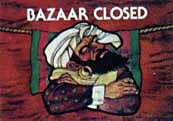 |
Haggling.
If you desire a particular item but think the price is too high, press the
Haggle button. You have approximately a 50/50 chance of lowering
the stated price by one bag of gold. If you are successful in haggling,
either buy the item or press the Haggle button again to try and
get more of a bargain. Of course, if you haggle to much, you run the risk
of angering the merchant. If you anger the merchant, you'll see his
picture in the tower.This Bazaar Closed picture indicates that you're turn
is over and that you cannot buy anything on this turn. You may try again
to buy an item on your next turn, if you wish.
Buying an item. If you wish to buy an item at a stated price, then press the Yes / Buy button to tell the tower, Yes, I want that particular item. You can buy one of the following on a turn:
|
|
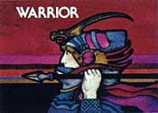 |
Warriors.
Warriors are valuable because they are used to fight brigands and to carry
bags of gold.
How to buy Warriors...To buy warriors at a specific price, press the Yes / Buy button when the Warrior picture appears in the light-up window. A 01 symbol will appear in the digital display window which indicates that you have purchased one warrior. If you wish to buy more warriors, press the Yes / Buy button until the desired number of warriors appears. Then press the No / End button to end the transaction. The tower will automatically compute the transaction and flash in the windows the picture and the total amount of gold you have left after the purchase. Some interesting facts you should know about Warriors...You can gain warriors with other game actions aside from buying them a the Bazaar. You add more warriors to your force when you enter a plagued territory and you own a Healer, when you slay a dragon, when you enter a Sanctuary with 4 or less men and when you are awarded a wizard. Remember, you can lose warriors in battles, when entering a plagued territory without a Healer, by being attacked by the dragon and by being cursed by a wizard. The maximum number of warriors you can have in your force is 99. Each warrior can carry 6 bags of gold. If your warriors are carrying the maximum number of bags of gold and during the game, you lose warriors...then you will automatically lose gold too.
|
|
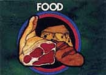 |
Rations Of Food.
Food is a valuable commodity. Each player begins the game with 25 rations of
food. Each turn you take, your warrior force consumes a certain amount of
food whether you move your warrior pawn or not on the gameboard. 15 warriors
or less will consume one ration of food per turn; 16 to 30 warriors will consume
two rations of food per turn; 31 to 45 warriors will consume three rations of
food per turn; 46 to 60 warriors will consume four rations of food per turn;
61 to 75 warriors will consume 5 rations of food per turn; 76 to 90 warriors
will consume 6 rations of food per turn; 91 to 99 warriors will consume 7 rations
of food per turn.
Low food warning...at the beginning of your turn, the tower will alert you with an audio signal that sounds like 3 low-pitched whoops when you run low on food. This low food warning will sound when you have only 4 or less turns of food left. You must then try to get to a Bazaar and buy food or go to the Sanctuary for a free food bonus before you lose warriors to starvation. If you do run out of food before you get to a Bazaar or a Sanctuary, you will lose one warrior per turn to starvation. You'll know when a warrior dies of starvation for you'll hear a "Death March" sound at the beginning of your turn. The maximum number of food rations you can carry is 99. How to buy food...Food rations are purchased like warriors. Food rations, however, are always priced at a fixed amount...one bag of gold per one food ration. Therefore, you cannot haggle with the merchant about price. When then Food picture appears in the tower, press the Yes / No button, a 01 symbol appears which indicates the number of food rations. Press the Yes / Buy button until the desired number of food rations appears. Then press the No / End button to close the transaction. The tower will automatically compute the transaction and flash in the windows the picture and total amount of gold you have left after the purchase.
|
|
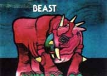 |
Beast.
A Beast is valuable because it can carry 50 bags of gold. Sonce the Beast allows
you to carry such a large amount of gold, you need fewer warriors for such a task.
Each player is allowed to own one Beast only. You can not lose a Beast during play.
How to buy a Beast. When the Beast picture appears in the light-up window with its stated price in the digital display, buy it by pressing the Yes / No button. Immediately, the tower will compute the transaction and flash in the window the picture of the Gold and the total amount of gold you have left after having made the Beast purchase.
|
|
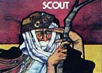 |
Scout.
A Scout is valuable for he will see you safely through uncharted territories. You
can never get lost, if you own a Scout. For example, when the Lost picture appears
in the window and you own a Scout, instead of losing a turn and having to send your
pawn back into the last territory it was in, you are automatically awarded an extra
turn. Each player is allowed to own one Scout only. The Scout remains with you for
the entire game.
How to buy a Scout...When the picture of the Scout appears in the window with its stated price in the digital display, buy it by pressing the Yes / Buy button. Immediately, the tower will compute the transaction and flash in the window the picture of the Gold and the total amount of gold you have left after the purchase of the Scout.
|
|
|
Healer.
A Healer is a valuable addition to your force. If you enter a plagued territory and
see the Plague picture in the window and you own a Healer, instead of losing two
warriors to sickness, your Healer will add two extra healthy warriors to your force.
Each player is allowed to own one Healer only. The Healer remains with you for the
entire game.
How to buy a Healer...When the Healer picture appears in the window with its stated price, buy it by pressing Yes / Buy button. Immediately, the tower will compute the transaction and flash in the window the picture of the Gold and the total amount of gold you have left after the purchase of the Healer.
|
|
|
Closing the Bazaar...Anything you buy will cost a specific number of bags of
gold. When purchasing an item, don't overestimate your gold supply. If you try to buy
more then you can afford, the Bazaar will close, you will see the Bazaar Closed
picture in the window and your turn will be over.
Very Important...If you enter the Bazaar and decide not to purchase any items, press Clear button to negate your move. Your turn will be over and you will not have to buy anything. |
|
|
This is a very special button. When you move your pawn into one of the 4 long,
narrow frontier territories which separate one kingdom from another, the
Frontier button on the Dark Tower panel is pressed automatically. You
will hear a triumphant musical sound.
The first time you move your pawn to a frontier territory is when you leave your home kingdom to enter the first foreign kingdom to the right. You'll find your first key in this kingdom. The next two times you move your pawn to a frontier territory, you'll be leaving and entering other foreign kingdoms. The last time you move to a frontier territory, you'll be leaving a foreign kingdom and entering your own home kingdom.
|
| 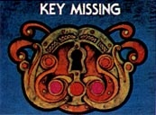 |
Please Note...If you do attempt to leave a foreign kingdom without
discovering the key for that kingdom and you move your pawn to a frontier
territory, the tower will catch you and flash the Key Missing picture in
the window and emit a sad-sounding musical signal. Your pawn moves back to
the last territory it was in before you crossed the frontier. Stay in that
kingdom until you discover its key.
The use if the Frontier button with Pegasus...if you use your Pegasus to fly to another territory in another kingdom, be sure to move first to the frontier to alert the tower that you are now in a new kingdom. You cannot fly out of a kingdom with a Pegasus if you have yet to find the key in that kingdom. If you attempt to do so, you'll see the Key Missing picture flash on the screen. Your pawn moves back to the territory it was in and you lose your Pegasus...Quite a penalty, so be sure to always use Pegasus legally. |
Instead of moving your pawn into a territory, you have the option on your turn of taking inventory. Taking inventory means you want to verify the amounts of warriors, gold, food and other items you have. To take inventory, press the Inventory button and the tower will display with picture and digital signals what you have and how much of it you own. You will see warriors, gold, food, keys, Dragonswords, Scouts, Beasts, Healers and Pegasus.
Press this button after you make an illegal move or if you wish to purchase nothing in the Bazaar. After you press the Clear button you hear many rapid beeps which sound like a siren. Your pawn moves back to the last territory it was in. Your turn is over and the next player's identifying number should be flashing in the digital display.
If you missed a particular picture or numeral digital signal in the window, press the Repeat button to review what slipped by you.
Please Note...the Repeat button does not recap every event. It will show you what treasures you have lost or gained. It will not repeat the frontier audio signal, the beeps indicating a safe move or the creacking door signals of the Mines or Ruins. Neither will the Repeat button show you how many warriors you have left after a battle.
|
|
Move to the Dark Tower territory when you have fulfilled all of the following
requirements: you have collected all 3 magic keys, you have crossed 4 frontiers
and are back in your home kingdom and you are ready to begin your siege of the
Dark Tower. When you move your pawn to the Dark Tower territory you will hear
a few notes of the "1812 Overture" and the tower signal you to solve The Riddle
of the Keys.
The Riddle of the Keys...in order to gain entry into the Dark Tower and to fight the final battle with the brigands within, you must unlock the tower by putting the keys into a special order (you must arrange the brass, silver and gold keys in proper numerical order)...this is called solving The Riddle of the Keys. Here's how to solve the riddle...The order of the keys (which key is #1, #2 and #3) changes from game to game. After you moves your pawn to the Dark Tower territory and hear the musical overture, a picture of one of the keys and the digital number 1 will appear in the digital display. The tower is asking you if that particular key is key #1. You must respond by pressing either the Yes / Buy button or the No / End button. Pressing the Yes / Buy button will tell the tower, yes I think the key shown is key #1. Pressing the No / End button will tell the tower, show me more, I think another key might be key #1. If you continue to press the No / End button, all 3 keys will eventually flash on in the light-up window. When the key you think is key #1 appears, press the Yes / Buy button to tell the tower of your choice. If your first guess is correct, a picture of one of the two remaining keys and the digital number 2 appear in the window. The tower is asking you if this particular key is key #2. Press Yes / Buy or No / End buttons as above to make your choice. If your first guess is incorrect, you will hear a negative musical signal and your end of turn signal appears in the tower window indicating your turn is over. To properly end your turn, press the No / End button. Now you must wait for your next turn to guesss again. On your next turn, try again to pick key #1. As you can see, choosing the proper order of the keys is pure guess work and your correct choices are made through process of elimination. Continue pressing Yes / Buy and No / End buttons to guess as above. Once you correctly choose key #2, you have successfully solved The Riddle of the Keys. The tower will not ask you to make your choice of key #3, since your answer will obviously be correct. As soon as you correctly pick key #2, the Final Battle begins. Important...if your first guess was correct but your second guess was incorrect, your turn is over. Wait until your next turn to pick key #2. On your next turn, the tower will ask you to identify key #1 again before it presents your choices for key #2. Press the proper Yes / Buy and No / End buttons to answer. To avoid confusion, the best advice to follow is always watch the digital display and light-up window carefully so you'll know exactly what key and in which order it is being presented. You may press the Repeat button, if necessary. The Final Battle...Once you have solved The Riddle of the Keys you must fight the brigand force within the Dark Tower. As soon as key #2 is properly picked, you'll hear a battle horn and the number of Brigands and their picture will appear in the window. You now know how many brigands are guarding the Ancient Scepter. During the battle you must make a critical decision, stay and fight or retreat. If you fight, the classic battle sequence with its many skirmishes will take place. If you retreat, head back to the Bazaar or your own home Citadel to gain more warriors, then head back to the tower again to lay siege. If you do retreat, when you attack the tower again, you must solve the riddle again (the sequence does not change) before the Final Battle will take place.
|
| 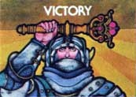 |
If you're victorious...If you win the battle, you will hear a triumphant
musical signal and you will see the Victory picture of the Ancient Scepter
held aloft in triumph. Congratulations, you've won the game.
Scoring...At the end of the game, you will see either double zeros 00 or numbers betweed 1 and 99 in the digital display. Double zeros indicate that you won the game but did not attain a score. A 1 to 99 in the window means you won the game and played extremely well...good enough to score betweed 1 and 99. 1 is the lowest score; 99 is the highest score. To attain a score, you must circle the board rapidly in as few moves as possible. Then, with all the courage you can muster, storm the Dark Tower and battle the brigands within with a small warrior force (the smaller your force, the more courageous you are and the higher your score). Remember, your score is based both on the number of moves it took you to circle the board and the number of warriors that you lay siege to the tower with. Attaining any score at all is quite an accompishment. |
| Game Level 4 |
Level 4 is programmed into the tower so players can experience game situations that occur towards the end of a Dark Tower game.
Here is what has been preprogrammed:
1. You own all 3 magic keys.
2. You know that there are 16 brigands in the tower to fight.
3. You know the Riddle Of The Keys...gold is key #1, silver is key #2 and brass is key #3.
4. Here is your present inventory: 10 warriors, 25 rations of food, 30 bags of gold,
a Beast, a Scout, a Healer, a gold key, a silver key, a brass key and a Dragonsword.
| Credit |
The Java version of the Dark Tower game was programmed by Michael Bommer. If you have questions or comments you can contact Michael Bommer at m_bommer@yahoo.de.
The graphics used for the boarddesign are © Copyright by David E. Gervais, and used with his express permission.
This program is free software; you can redistribute it and/or modify it under the terms of the GNU General Public License as published by the Free Software Foundation; either version 2 of the License, or any later version.
This program is distributed in the hope that it will be useful, but WITHOUT ANY WARRANTY; without even the implied warranty of MERCHANTABILITY or FITNESS FOR A PARTICULAR PURPOSE. See the GNU General Public License for more details.
You should have received a copy of the GNU General Public License along with this program; if not, write to the Free Software Foundation, Inc., 59 Temple Place - Suite 330, Boston, MA 02111-1307, USA.